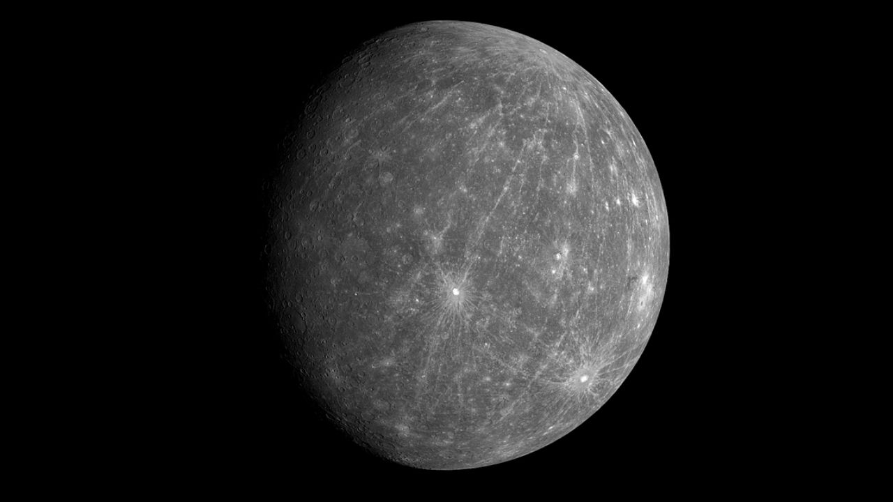

Mercúrio é o menor planeta e o mais próximo do Sol.

Seu tamanho é apenas um pouco maior que o da Lua.
Mercúrio completa uma órbita em cerca de 88 dias e não possui luas. Sua superfície craterada lembra a da Lua, mas seu núcleo rico em ferro gera um campo magnético fraco. Como quase não tem atmosfera, as temperaturas variam muito entre o dia e a noite. A relatividade geral explica pequenas mudanças observadas em sua órbita.